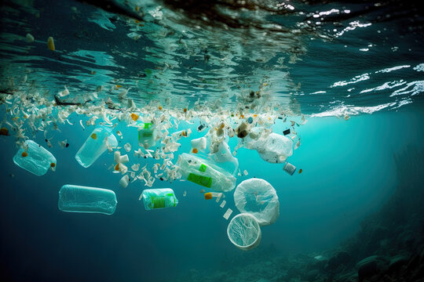

"We've reached a point where if it's not water reuse, it's water abuse."
Drought and Water Scarcity
Increased population, climate change, and uneven water distribution lead to water scarcity, impacting agriculture, ecosystems, and human well-being.

Water Pollution
Industrial waste, agricultural runoff, and improper sanitation contaminate water sources, posing health risks and harming aquatic life.
Aging Water Infrastructure
Leaky pipes, deteriorating treatment plants, and outdated systems lead to water loss and inefficient water delivery.
Discharging of Industrial Waste
Industrial discharge contains a large number of hazardous chemicals. It discharges these chemicals directly into the rivers, lakes, or nearby water bodies.
Mission H2O is a non-profit organization dedicated to promoting sustainable water solutions. We work with communities and businesses to conserve water and protect our precious resources.

Empowering Change: Waste Water Recycling Plant
Chennai's Wastewater Recycling Plants: Chennai, a major metropolis, has become the first Indian city to recycle wastewater at a large scale. Their two innovative treatment plants can recycle 20% of the city's sewage, reducing pressure on freshwater sources for non-drinking needs.
Learn More